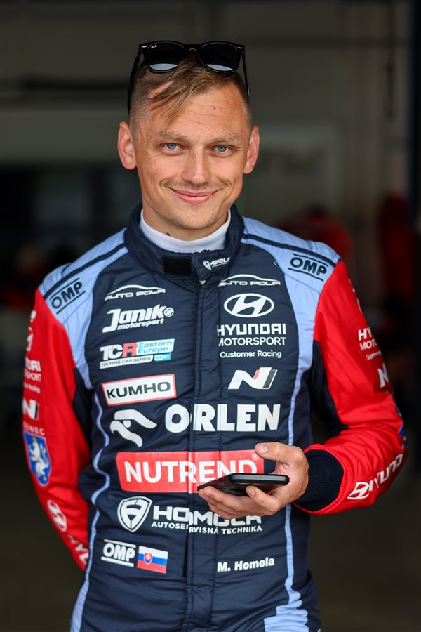
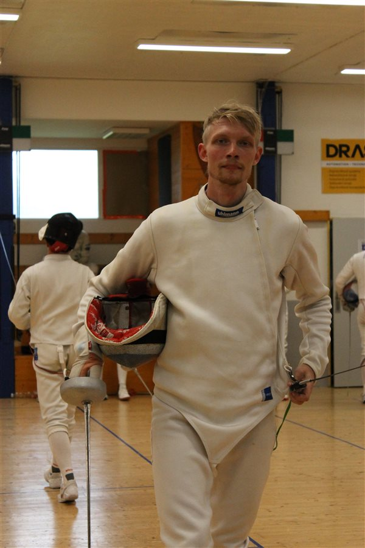

Vizuálny tréning — chýbajúci článok tvojej športovej prípravy.
O vizuálnom tréningu
Väčšina športovcov trénuje telo. Len málokto trénuje oči.
Skôr než sa pohneš, musíš vidieť. Vizuálny systém vedie každé rozhodnutie na ihrisku — a presne tak ako sila alebo rýchlosť, aj vizuálny systém sa dá trénovať.
Čo to je
Súbor cvičení a testov, ktoré zlepšujú rýchlosť, presnosť a rozsah toho, čo vidíš a spracuješ — od periférneho videnia po reakciu na pohyb.
Prečo to funguje
Mozog sa dá trénovať rovnako ako sval. Pravidelný vizuálny a kognitívny tréning skracuje čas medzi vnemom a pohybom — a to sa priamo premieta do výkonu.
Focus in motion
Zisti, kde sú tvoje limity.
Rýchlosť reakcie, pamäť, koordinácia — presne merané testy, edukatívne video obsah a tréningové programy na jednom mieste.
Hodnotenie vychádza z priemeru všetkých pokusov — pre objektívnejší výsledok odporúčame vykonať aspoň 5 opakovaní.
Prečo je to dôležité
Reakčný čas je základ takmer každého športu — o zlomky sekundy sa rozhoduje gól, obrana, únik súperovi. Pravidelný tréning reakcie skracuje čas medzi vnemom a pohybom a znižuje počet premeškaných momentov.
Čo meria
Rýchlosť, akou reaguješ na jednoduchý vizuálny podnet — čas medzi zmenou farby a tvojím kliknutím, meraný v milisekundách.
Komu pomôže
Športovcom vo všetkých odvetviach, vodičom aj každému, kto chce sledovať svoju psychomotorickú výkonnosť v čase.
Hodnotiaca škála
< 180 msŠpičková úroveň
180–219 msVýborná reakcia
220–269 msPriemerná reakcia
270–319 msMierne podpriemerná
≥ 320 msPomalšia reakcia
Pre porovnanie: bežný dospelý má priemer okolo 250 ms · profesionálni esports hráči 150–180 ms · olympijskí šprintéri pri štarte 120–160 ms (reakcia pod 100 ms sa počíta ako predčasný štart).
Odporúčaná batéria
Akému športu sa venuješ?
Vyber si šport a ukážeme ti presne tie testy, ktoré sú preň najdôležitejšie.
Tvoja odporúčaná batéria
Testy sú zoradené podľa toho, ako priamo súvisia s tvojím športom — pokojne ich absolvuj v tomto poradí.
V praxi
Kde sa vizuálny a kognitívny tréning reálne využíva
Vizuálny a kognitívny tréning nie je marketingový pojem — vo svete sa dnes bežne používa naprieč športom, bezpečnosťou aj medicínou.
Šport
Od volantu po ihrisko — periférne videnie a rýchle rozhodovanie rozhodujú takmer v každom športe.
Motošport
Piloti F1 a WRC musia pri rýchlosti nad 300 km/h vyhodnotiť situáciu v zlomkoch sekundy.
Štúdia J. Fauberta (2013) ukázala, že profesionálni futbalisti sa učia sledovať viacero pohybujúcich sa objektov naraz rýchlejšie než bežná populácia. Podobný tréning absolvovala aj olympijská brankárka Erin McLeod.
So zrakovým tréningom experimentovali hviezdy ako Stephen Curry a Kawhi Leonard. Kluby v NBA, napríklad Toronto Raptors, naň bežne používajú nástroj NeuroTracker.
Bývalý MVP Matt Ryan trénuje s nástrojom NeuroTracker celoročne. Tímy v NFL bežne testujú hráčov aj na zariadeniach typu Dynavision — reakcia na svetelné podnety naprieč zorným poľom.
Connor McDavid roky trénuje periférne videnie a reakciu — podľa jeho agenta mu to dáva kľúčovú výhodu na ľade. Podobne trénovali aj Sidney Crosby a Tom Wilson.
Rozsiahla štúdia ACTIVE (Edwards a kol.) ukázala, že tréning rýchlosti spracovania — rovnaký princíp ako UFOV — znížil riziko demencie počas 10-ročného sledovania takmer o polovicu.
Kondičný tréner s viac ako 25-ročnou praxou v basketbale. Pripravoval slovenskú ženskú reprezentáciu, kluby Piešťanské Čajky a Spišskí Rytieri aj rumunský olympijský tím 3x3.
Naši športovci
Trénujú s nami
Vizuálny tréning využívajú aj špičkoví slovenskí športovci naprieč rôznymi disciplínami.

Maťo Homola
Najúspešnejší slovenský automobilový pretekár.

Alex Duduc
Slovenský reprezentant v šerme kordom, niekoľkonásobný majster SR.